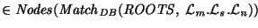

The key to understanding AUCQL is understanding the specification and use of variables. Variables in AUCQL are very much like variables in Lorel, the primary difference being that in AUCQL, a variable can range over the result of any of the extended query operators discussed in Section 3.2. Below is an AUCQL (or Lorel) query to find the names of movie stars.
SELECT Name FROM movie.stars.name Name;(This is not the shortest, or best possible query, but is adequate for the purposes of this discussion.) This query sets up a variable Name that ranges over the terminal nodes of paths that match the regular expression movie.stars.name. In terms of the operations discussed in Section 3.2, the variable has the following meaning.
In fact, in AUCQL, this interpretation can be given explicitly.:= {(name! movie)}
:= {(name! stars)}
:= {(name! name)}
Name
SELECT Name
FROM NODES(MATCH(roots, (NAME! movie).
(NAME! stars).(NAME! name))) Name;
In AUCQL, a bareword descriptor (e.g., movie) defaults to a
required use of the name property (e.g., to (NAME!
movie)), since that will be the most commonly used property.